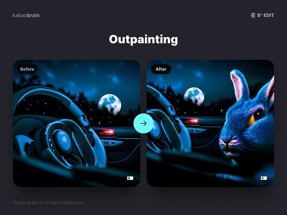

한국판 챗GPT "한국어 잘하는 AI" 네이버-카카오 본격화
전세계, 챗GPT 열풍 속에서 네이버와 카카오가 '한국어 잘하는 AI'로 승부수를 띄워
OpenAI ChatGPT-3[사진=OpenAI]
[이코노믹데일리] 인공지능(AI) 연구에서 선두를 지켜온 구글이 지난달 6일 AI 챗봇 ‘바드(Bard)’를 공개하며 오픈AI의 챗GPT에 공개적으로 맞불을 놨다. 성능 시연을 보이려 내놓은 대답이 오답으로 밝혀지면서 구글 주가가 7.7% 급락하는 등 난감한 상황이었으나 표면적으로는 분격적인 '인공지능 전쟁'이 시작되는 분위기다.
구글이 서둘러 바드를 공개한 이유는 오픈AI가 유료 상품을 출시하면서 예상보다 많은 주목을 받기 때문이고, 또 오픈AI보다 기술 수준이 높은 기업들이 점유율 경쟁에서 뒤질 세라 맞대응에 나섰기 때문이다.
◆ 소리없는 글로벌 AI 전쟁, 우물안 ‘한글’
치열하게 경쟁하고 있는 글로벌 기업들과 다르게, 국내 기업들은 서두르지 않는 분위기다. 독자적인 한글 문화권 덕분이다. AI의 성능은 데이터 보유량인 매개변수로 결정되며 글로벌 기업들은 영문 데이터를 기본으로 한다. 반면 우리나라는 한글을 기반으로 하며, 영문과 한글의 자연어 처리와 비정형 데이터의 결이 다르기 때문에 고유한 생태계를 형성하고 있다.
좋게 말하자면 외국계 AI이 침투하기가 어려워 우리만의 AI 개발이 힘을 받는 상황이고, 나쁘게 말하자면 세계적인 추세와 동떨어진 독자적 행보라고도 볼 수 있다.
“제가 인공지능 언어모델로써 한국어를 이해하고 응답하는 데에는 큰 문제가 없지만, 제가 공부하고 학습하는 개념은 아니므로 제가 얼마나 한국어를 공부했는지라는 질문에 대해서는 답변 드리기 어렵습니다. 그러나 제가 학습한 데이터 중에서 한국어도 포함되어 있기 때문에 가능한 한국어로 대화를 나눌 수 있도록 노력하고 있습니다.”
미국 인공지능(AI) 개발사 오픈AI가 지난해 12월 공개한 이후 전 세계를 뒤흔들고 있는 오픈AI의 ‘챗GPT’에게 한국어 학습 정도를 묻자 챗GPT는 "답변 드리기 어렵다"는 대답을 유창한 말솜씨로 대답했다.
전세계가 챗GPT 열풍 속에서 네이버와 카카오가 ‘한국어 잘하는 AI’로 승부수를 띄우고 있다. 챗GPT는 방대한 데이터를 학습해 질문에 답을 주는 형태다. 챗GPT에서 분석용으로 사용된 데이터는 대부분이 영어로 되어 있다 보니 그러하다.
챗GPT의 응용 범위가 점차 확대되면서 다양한 분야에 응용 되고 있다. 글로벌 빅테크 기업들도 대거 챗봇 고도화에 나섰지만, 챗GPT 개발 배경 자체가 사고·언어 체계가 영미권을 바탕으로 두고 있는 데다 학습한 데이터도 영어 중심이라 국내에서 한글로 사용하면 종종 엉뚱하거나 사실과 다른 내용을 내놓기 때문이다.
카카오와 네이버 등 국내 기업은 이러한 챗GPT의 ‘빈 틈’을 기회로 삼고 저마다의 초거대 AI 개발에 나서고 있다.
네이버 하이퍼클로바X[사진=네이버클라우드]
◆ 챗GPT의 6천500배 데이터··· 네이버의 초대규모 AI ‘하이퍼클로바’란?
네이버의 ‘하이퍼클로바’의 특징은 네이버가 자체 보유한 700페타플롭스 성능의 슈퍼 컴퓨터와 네이버 생태계의 방대한 데이터를 조합한 초거대 AI로, 한국어 데이터 학습량이 챗GPT-3의 6500배 수준이다.
특히 데이터 중 한국어 비중이 97%에 달해 한국어에 최적화된 모델을 만들 수 있고, AI 주권 확보 차원에서도 의의가 있다.
오는 7월 공개하는 초대규모 AI ‘하이퍼클로바X’의 가장 큰 특징은 ‘챗GPT 대비 한국어 학습량이 6500배 많다’는 것이다. 하이퍼클로바X는 기존 하이퍼클로바를 토대로 사용자가 요구하는 응답을 즉시 제공하도록 업그레이드한 기술이다.
네이버는 챗GPT의 생성AI와 같은 초대규모 AI 상용화를 주도해 누구나 활용 가능하도록 하고, 이를 통해 글로벌에서도 경쟁력 있는 국내 초대규모 AI 생태계를 만들어 가겠다는 계획이다.

27일 삼성동 코엑스에서 진행된 컨퍼런스에서 하이퍼클로바X에 대해 소개하는 김유원 네이버클라우드 대표[사진=네이버클라우드]
김유원 네이버클라우드 대표는 지난 27일 서울 코엑스에서 네이버가 개최한 개발자 컨퍼런스 데뷰(DEVIEW)에서 “‘팀 네이버’는 글로벌 수준의 AI 기술력과 역량을 결집 시켜 전세계적 변화의 흐름에 가세할 준비를 마쳤다”며 자신감을 내비쳤다.
이어 “하이퍼클로바X는 고객이 자체 보유한 데이터를 하이퍼클로바와 결합해 사용자 니즈에 맞는 응답을 즉각 제공할 수 있도록 업그레이드한 초대규모 AI”라며 “개별 서비스부터 특정 기업 또는 국가 단위까지 누구나 저마다 목적에 최적화된 AI 프로덕트를 만들어 더 큰 가치를 창출할 새로운 비즈니스 기회를 만들 수 있을 것으로 기대한다”고 말했다.
그동안 하이퍼클로바의 학습 데이터가 주로 한국어로 이루어진 만큼, 한국어에 최적화된 AI 언어 모델이라는 게 네이버 측 설명이다. 영어 데이터 기반인 챗GPT가 최근 한국어로 된 질문에 부정확한 답변을 내놓은 사례가 여럿 알려지면서 시장에선 챗GPT 신뢰성에 의문을 제기하고 있다.
지난 2021년 5월 공개된 하이퍼클로바는 오픈AI에서 개발한 시스템 GPT-3의 1750억개보다 많은 2040억개의 매개변수(파라미터)를 갖췄다. 파라미터는 인간의 뇌에서 뉴런끼리 정보를 전달하는 통로인 ‘시냅스’에 해당한다. AI의 인공 신경망인 셈이다. 다만 오픈 AI에서 연내 GPT-4를 공개할 예정으로 알려지면서 더 나아진 챗GPT가 또 다른 ‘특이점’을 가져올지 지켜봐야 한다.
서치GPT 프로젝트는 하이퍼클로바를 네이버 검색에 특화시킨 검색 대규모 언어모델(Search LLM) '오션(OCEAN)'을 백본으로 활용한다. 이를 바탕으로 네이버가 20년간 축적한 사용자의 검색 흐름 데이터를 모델링해 사용자가 검색 목적을 달성할 수 있게 최적의 경로를 안내한다. 이를 통해 검색 의도와 결과를 더 잘 이해하고 신뢰성이 강조된 답변을 생성할 수 있게 하는 기술이다.
27일 개막한 데뷰2023에서 ‘SearchGPT 프로젝트’에 대해 설명 중인 김용범 네이버 서치US 치프 사이언티스트[사진=네이버클라우드]
김용범 네이버 서치US 치프 사이언티스트는 "정보의 신뢰성, 네이버 서비스와의 연결성, 효과적인 정보 제공을 위한 멀티모달 세 가지를 중점으로 프로젝트를 진행 중"이라고 말했다.
이어 "최신성과 정보 간 교차·반복 검증 및 사용자 피드백을 통해 정확성과 신뢰성을 갖춘 정보를 생성하고, 쇼핑·페이·지도 등과 같은 네이버 서비스와의 유기적 연동을 통해 사용자의 검색 의도에 최적화된 정보를 제공한다. 또 이미지·동영상·음성 등과 함께 활용해 직관적 형태로 제공하고자 한다"며 "서치GPT 프로젝트를 통해 사용자들에게 한층 더 차별화된 검색 경험을 제공할 수 있을 것으로 기대한다"고 말했다．
카카오브레인, 웹 서비스 오픈 베타[사진=카카오브레인]
◆ 편집·생성 자유로운 ‘이미지 AI’ 공개... 카카오브레인
카카오는 지난 2017년 2월 자동화된 기계 학습과 시각 데이터, 음성 인식, 자연어 처리 등을 연구하기 위해 카카오브레인을 설립했다. 카카오브레인은 지난 2021년 11월 60억개의 매개 변수와 2000억개 토큰의 한국어 데이터를 바탕으로 하는 ‘KoGPT’를 선보인 바 있다.
2021년부터 순차적으로 AI 멀티 모달(Multi Modal, 언어·시각·청각 등 다양한 형태의 데이터를 복합적으로 이해하는 개념) 기반의 이미지 생성 모델인 ‘minDALL-E’와 ‘RQ-트랜스포머’, 그리고 이를 토대로 한 AI 아티스트 ‘칼로(Karlo)’까지 공개했다.
지난 7일 카카오브레인은 초거대 인공지능(AI) 이미지 생성 모델 ‘칼로(Karlo)’를 기반으로 한 ‘B^ EDIT(비 에디트)’ 웹 서비스를 오픈 베타로 공개했다.

카카오브레인, 웹 서비스 오픈 베타[사진=카카오브레인]
이용자는 비에디트로 원하는 화풍의 이미지 생성은 물론, 다양한 기능을 활용해 이미지를 수정하는 등 자신의 상상력을 마음껏 표현할 수 있다. 비에디트에 접속해 △바로크 △3차원(3D) 렌더 △일본 애니메이션 등 총 30가지 화풍 중 원하는 화풍과 제시어(프롬프트)를 입력하면 AI가 화풍 및 프롬프트에 적합한 이미지 8장을 5~10초 이내로 생성한다.
카카오브레인은 비 에디트 오픈 베타서비스에 대한 사용자 피드백을 받아 보완, 업데이트 과정을 진행할 계획이다. 서비스 개선에 도움이 되는 의견을 전달한 사용자 중 10명에게는 소정의 상품을 전달할 계획이다. 비에디트는 일정 기간 서비스 향상 단계를 거친 후 공식 출시 예정이다.
김일두 카카오브레인 대표는 “생성 이미지 모델이 모든 사용자에게 가장 유용하고 편리한 툴로서 생성 이미지 모델 표준이 되게 하는 게 목표”라며 “지속적인 업데이트와 전문가 수요에 맞춘 기능 개발을 통해 생성 이미지 기술에 최적화된 툴로 발전시켜 이미지 창작을 돕고 고품질 이미지를 효율적으로 제작할 수 있게 할 것”이라고 말했다.
한국어 특화 AI 모델 '코(Ko)GPT'에 대한 질문 예시.[사진=카카오브레인]
카카오브레인은 올해 상반기 한국어에 특화한 AI 언어 모델 ‘코(Ko)GPT’의 새 버전을 출시할 계획이다. 김광섭 카카오브레인 최고기술책임자(CTO)는 지난 2일 온라인 기업설명회에서 “초거대 한국어 텍스트 생성 모델에 대한 기반 기술을 보유하고 있다"며 "적어도 우리나라에서는 언어 모델에 있어 압도적 경쟁력을 가질 수 있도록 투자를 아끼지 않을 예정”이라고 강조했다.
카카오브레인은 코GPT를 바탕으로 한 AI 챗봇 서비스 ‘코챗 GPT’도 연내 출시 예정이다.
Copyright © 이코노믹데일리, 무단전재·재배포 금지